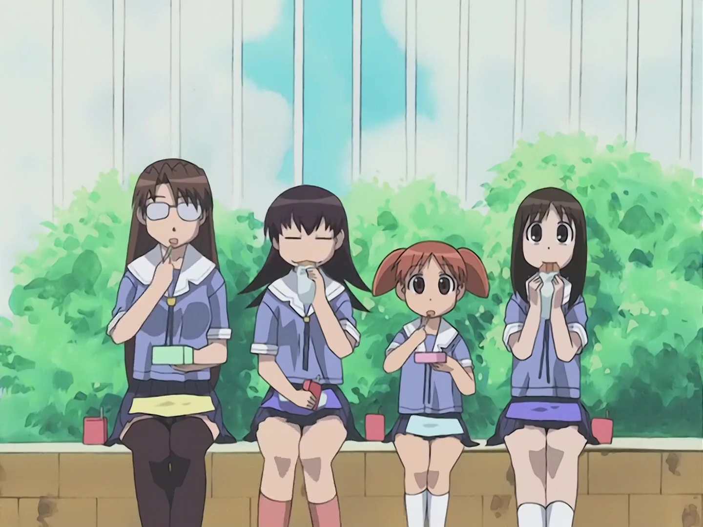
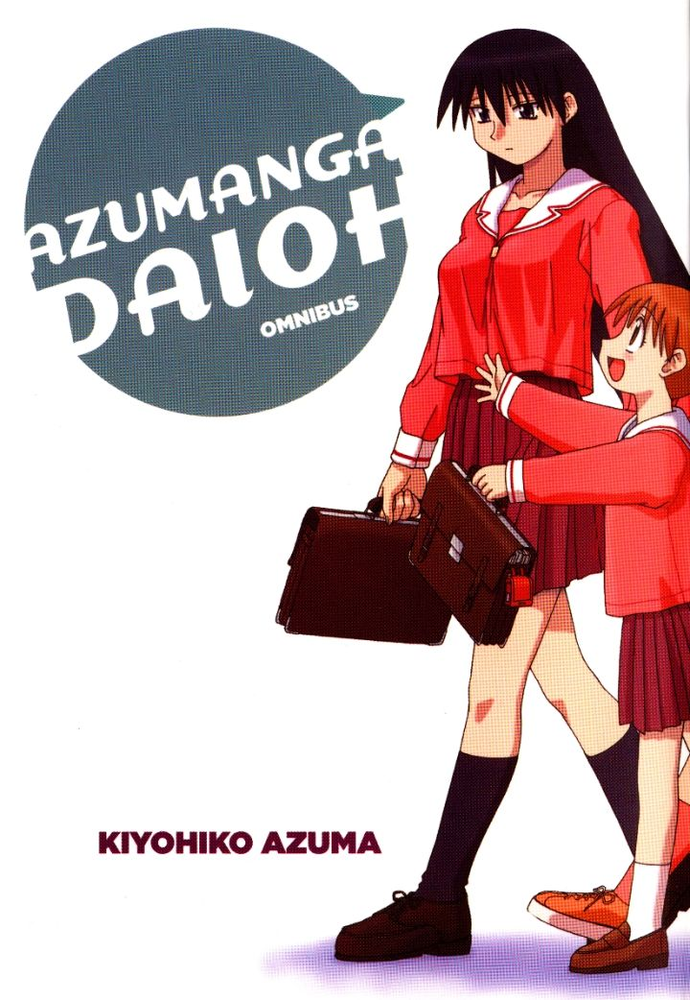

|  |
Azumanga Daioh (あずまんが大王) is a Japanese yonkoma comedy manga series written and illustrated by Kiyohiko Azuma. An anime television adaptation titled Azumanga Daioh: the Animation was produced by J.C.Staff and aired in Japan between April and September 2002, consisting of 130 four-minute segments compiled into 26 episodes. Azumanga Daioh chronicles the everyday life in an unnamed Japanese high school of six girls and two of their teachers
Manga cover from Yen Press Editorial 4 in 1:
|  |